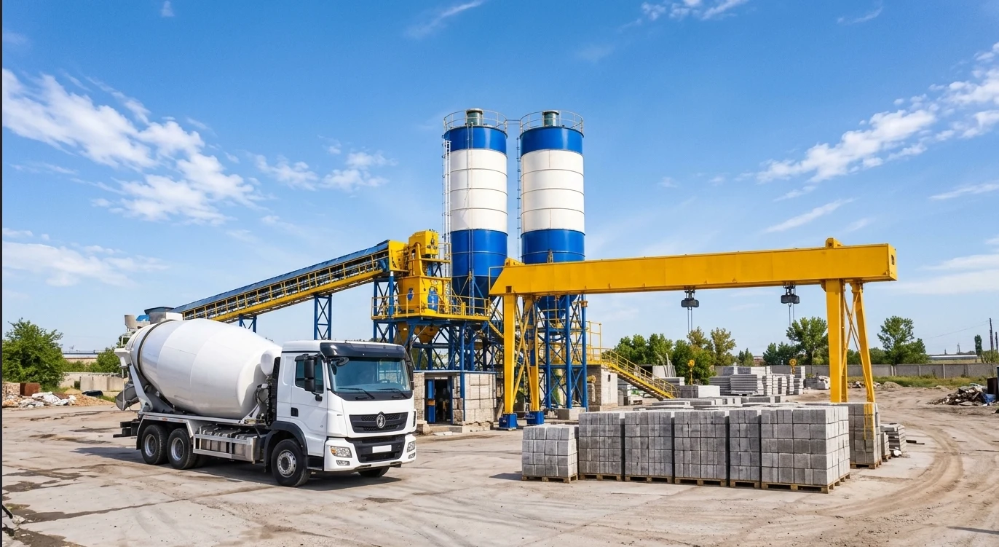
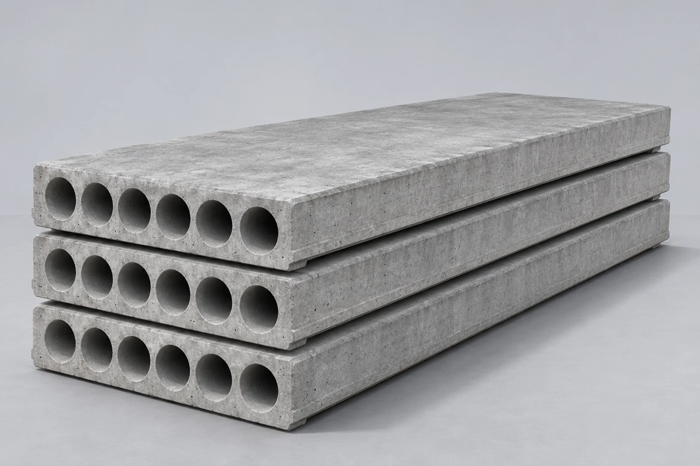
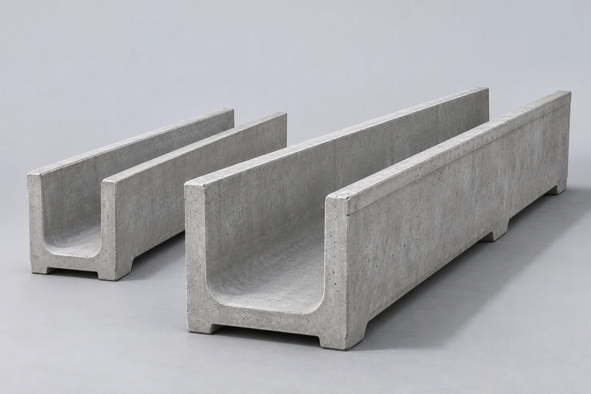
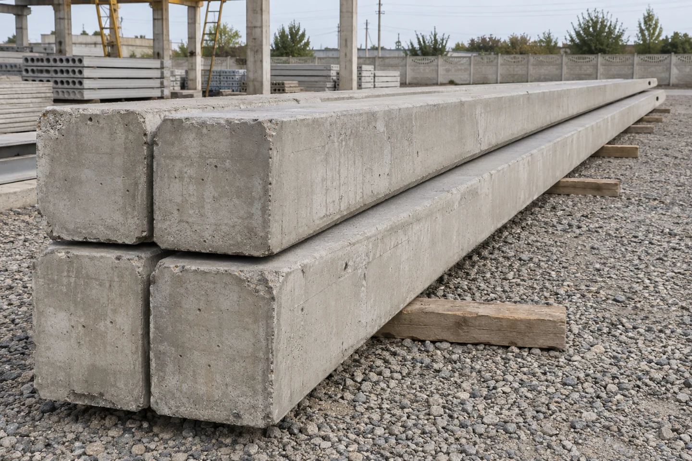

Poydevor va beton pol
Tayyor beton
Qolipga quyish uchun zavodda qorilgan beton. Maydonda sement, qum va shag‘alni alohida aralashtirishga hojat qolmaydi.
Narxini so‘rashXorazm, Xiva
Uy poydevoridan hovlidagi suv yo‘ligacha — Xiva Beton zavodida tayyor beton, plita, latok va tayanch ustunlarni tanlashingiz mumkin.Tayyor beton, plita, latok va ustunlar.
Katalogni ko‘rish
Xiva Beton zavodida uylar, hovlilar va qurilish obyektlari uchun tayyor beton va beton buyumlar ishlab chiqaramiz.
Bajaradigan ishingizga qarab tanlang.
Qolipga quyish uchun zavodda qorilgan beton. Maydonda sement, qum va shag‘alni alohida aralashtirishga hojat qolmaydi.
Narxini so‘rash
Tayyor plita qavatlar orasini yopadi. Loyiha o‘lchamiga mos plitani tanlab, montaj ishini oldindan rejalashtirish mumkin.
Narxini so‘rash
Hovli yoki yo‘l chetidagi suvni belgilangan tomonga yo‘naltiradi. Ochiq novni ko‘zdan kechirish va tozalash qulay.
Narxini so‘rash
Elektr liniyasi simlarini loyiha bo‘yicha kerakli balandlikda tutib turadigan beton tayanch.
Narxini so‘rashRasmlar mahsulot turini ko‘rsatadi. Aniq o‘lcham va mavjudlik buyurtma vaqtida tasdiqlanadi.
Mahsulot tanlashdan yetkazishgacha, buyurtmangizni zavod bilan bevosita kelishasiz.
Poydevor uchun tayyor beton, qavatlararo yopma uchun plita, hovli yoki yo‘l chetidagi suv uchun latok tanlang.
Beton markasi, mahsulot o‘lchami va mavjudligini telefon yoki Instagram orqali aniqlashtiring.
Mahsulot miqdori va qurilish manzilini yuboring. Buyurtma narxi va tashish xarajatini birga so‘rashingiz mumkin.
Qo‘ng‘iroq qiling yoki mahsulot, miqdor va manzilni kiritib, tayyor so‘rovni Instagramda yuboring.